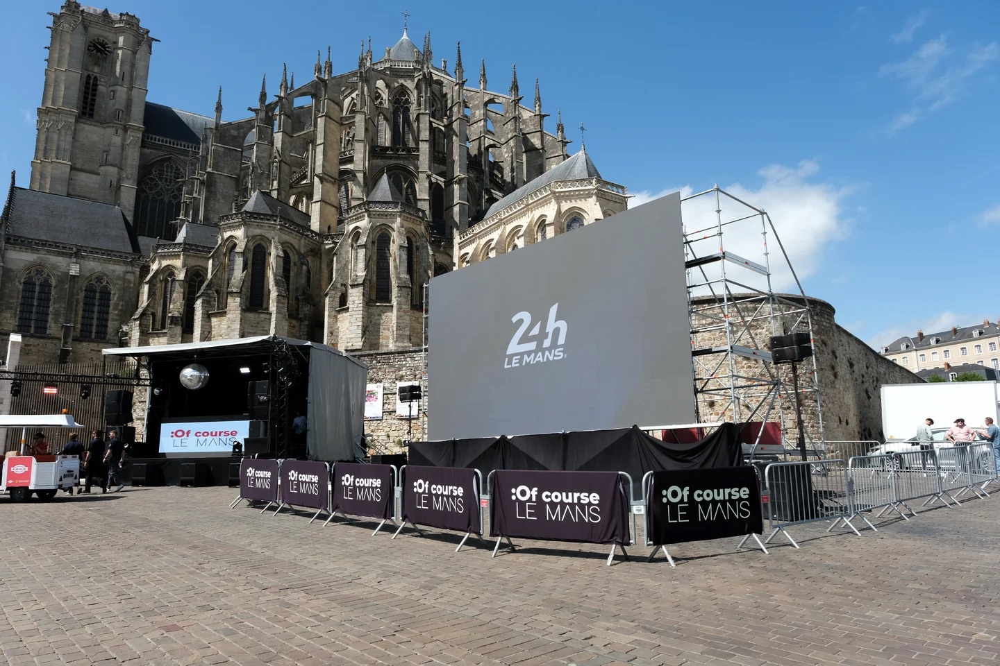
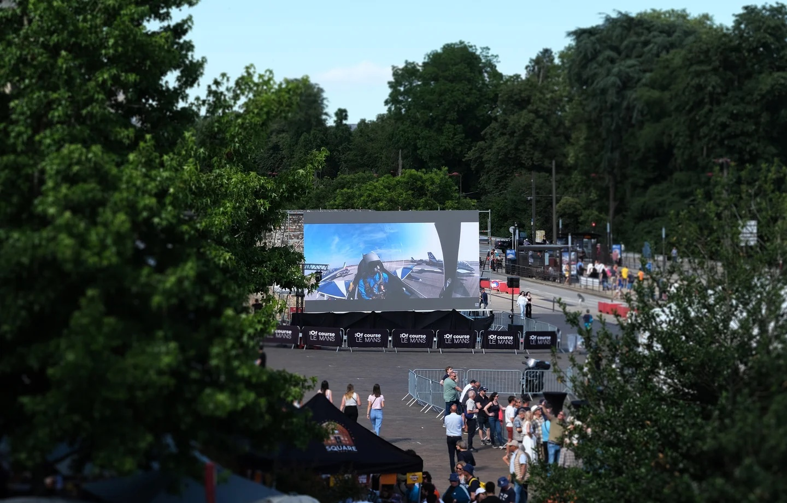
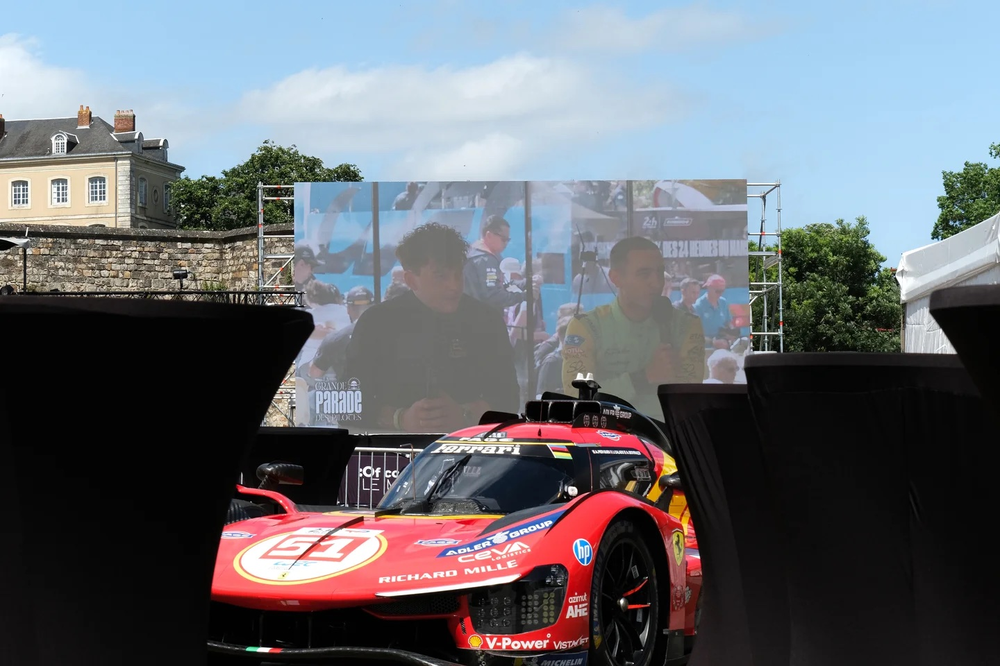

Endurance motorsport presents one of the harshest environments an LED display can face. At the Le Mans 24 Hours, screens must stay readable in direct daylight, survive a full day and night of continuous use, and withstand whatever weather a French summer can produce. For the 2026 event, partner LED Visual Innovation deployed two outdoor LED screens, with Asia Vision Technology providing manufacturing support.
This case study looks at what was deployed, what the environment demanded of the hardware, and why a manufacturing partner with proven outdoor capability was chosen for a world-renowned motorsport event.
The deployment consisted of two outdoor LED screens serving different audiences at the circuit. The main screen was positioned trackside to deliver real-time race standings and live video feeds to spectators, while the second screen was mounted on a mobile trailer in the fan zone, carrying event information and sponsor content to the crowds away from the track.
Splitting the deployment into a fixed trackside unit and a mobile fan-zone unit is a common pattern at major events. The trackside screen prioritises legibility and continuous reliability, since race standings must update without interruption over the full 24 hours. The fan-zone screen prioritises flexibility of placement and ease of redeployment as the event footprint changes.
The two roles place different demands on the hardware and the content pipeline. Race data must reach the trackside screen quickly and survive scrutiny from long viewing distances, while the fan-zone screen runs a more curated loop of event information and sponsor material that can change through the day.
| Screen | Location | Purpose | Operational Priority |
|---|---|---|---|
| Main screen | Trackside | Race standings and live footage | Continuous legibility over 24 hours |
| Trailer screen | Fan zone | Event information and sponsor content | Flexible placement and redeployment |
| Signal chain | Trackside to control | Timing data and video feeds | Fast update, stable over the race |
| Structure | Both units | Mounting for temporary deployment | Rapid build and removal |

Outdoor motorsport events demand extreme reliability from an LED display. Daylight readability was the first requirement, because a screen that washes out under direct sun is useless to spectators in an open grandstand. The deployment called for high brightness appropriate to outdoor daylight viewing, consistent with the outdoor specification Asia Vision builds into its D-PRO and X series cabinets.
Weather protection was the second requirement. A 24-hour race can span sun, rain and temperature swings, so the cabinets needed sealing against moisture and dust so that a sudden shower would not interrupt play. Outdoor-rated cabinets carry ingress protection designed for exactly this, keeping power and signal connections isolated from the elements.
The third requirement was resistance to the physical conditions of a circuit. Trackside installations are exposed to vibration from passing cars, wind loading and handling during setup and removal. Cabinets must hold their alignment under that treatment so that the image stays free of visible seams and mechanical faults.
Serviceability mattered as well. When an event runs continuously, any fault must be diagnosable and repairable quickly. Front and rear access to modules and power supplies allows a technician to replace a part without dismantling the structure, and this practical detail is what keeps a screen running through the night.
Finally, the screens needed to sustain extended operation without drift in colour or brightness. Refresh rate and thermal design determine whether the image remains stable hour after hour, and a display rated for a long service life can run the whole event without degradation becoming visible to the crowd.
Structural engineering is part of the specification too, even though it is not a property of the cabinet itself. Screens of this scale need mounting structures capable of wind loading, and on a temporary site those structures must also go up and come down quickly. The display hardware and the rigging plan are therefore specified together, because a cabinet that cannot be mounted safely on the available structure is of no use regardless of its image quality.

For a high-profile deployment, the selection of a manufacturing partner rests on demonstrated outdoor capability rather than on marketing claims. LED Visual Innovation needed cabinets with proven brightness, weather sealing and durability, and Asia Vision's X series outdoor cabinets were chosen to meet that brief under the demanding conditions of a motorsport circuit.
The decision also reflected the value of a supplier who understands event timelines. Temporary installations are built and struck against immovable dates, so hardware has to arrive correctly configured, with the right rigging points and connections, and behave predictably from the first power-up. A partner who has supported large outdoor events knows where the risks lie.
Reliability is the deciding factor at an endurance race. There is no second take, and a dark screen during the closing hours of a 24-hour event is visible to a vast audience. Choosing cabinets engineered for continuous outdoor operation is how the partner reduced that risk to an acceptable level.
The collaboration between a specialist event integrator and a display manufacturer is typical of large-format deployments. The integrator owns the site, the structures, the signal chain and the audience experience, while the manufacturer owns the hardware and the confidence that it will perform when the event is live.
Manufacturing support for an event of this scale extends beyond the cabinets themselves. Consistent colour and brightness across every panel matters when a single screen is assembled from many cabinets, because any variation becomes visible to a crowd of tens of thousands. Tight manufacturing tolerances are what allow a large screen to read as one continuous surface rather than a patchwork, and holding those tolerances across a production run is a manufacturing discipline rather than a site activity.
The partnership also reflects how event integrators prefer to work. Rather than dealing with an unfamiliar factory under time pressure, they return to a manufacturer whose hardware has performed before in comparable conditions. That predictability is worth more than a small difference in unit cost when the alternative is a risk to a live broadcast and a global audience.
Asia Vision Technology provides high-brightness outdoor LED displays for events, sports and entertainment applications. Its X series and D-PRO series are built for the durability and performance that professional event organisers demand, from weather-sealed outdoor cabinets to rental hardware designed for repeated transport and fast setup.
For event work, the product range covers the practical span of requirements. The X series rental cabinets use a 500 by 500 millimetre format with fast-locking construction and front and rear access, which suits touring and temporary staging. The D-PRO outdoor series brings IP65 sealing and high outdoor brightness for permanent or long-duration outdoor installation.
Event organisers also value predictable delivery and support. Asia Vision ships production in 15 to 20 working days, provides a three-year warranty, and backs installations with remote technical support and spare-parts logistics. For a deployment with a fixed date, that reliability is as important as the hardware specification.
The Le Mans deployment illustrates what event LED work demands: bright, sealed, durable hardware, planned around a schedule that cannot slip. Asia Vision's role as manufacturing partner reflects its capability to support large-scale outdoor displays in demanding environments.
Asia Vision Technology is an LED display manufacturer based in Shenzhen, China. Its products are used in events, sports, advertising and corporate applications, with a range spanning indoor fine-pitch and COB displays, rental cabinets and outdoor high-brightness screens.
The product line includes the CV-PRO and COB indoor series with a high contrast ratio for premium indoor work, the X series rental cabinets in a 500 by 500 millimetre format, and the D-PRO outdoor series with IP65 sealing and high brightness. Pixel pitches span the full range from fine-pitch indoor panels to large outdoor formats.
Asia Vision products carry CE, FCC and RoHS compliance, with UL and ETL listings for the US market, alongside UKCA and GS capability for European buyers. The company provides a 15 to 20 working day lead time and a three-year warranty, supported by remote technical assistance and spare-parts logistics.
For integrators and event partners, that combination of certified hardware, reliable delivery and after-sales support is the basis for long-term collaboration on demanding deployments such as the Le Mans 24 Hours.
For this requirement our range covers it directly: the COB Z rental series (7680Hz flip-chip) and the COB ZH touring series (sealed, wind-rated).